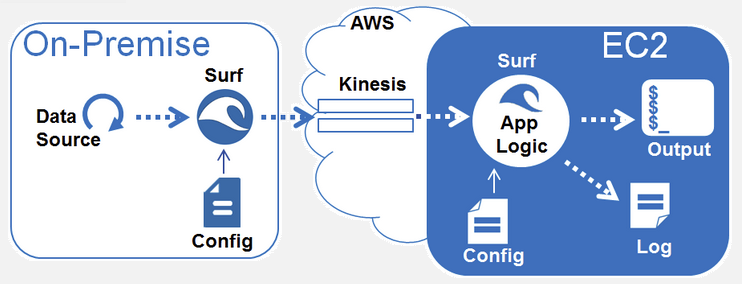
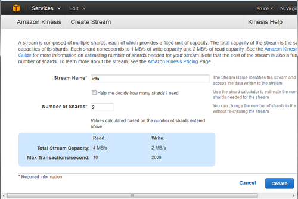
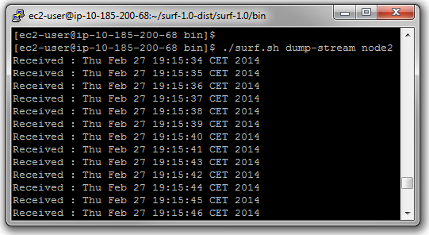
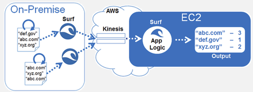

Examples
Example 1 – Simple Setup
This example explores connectivity between on-premise data sources and cloud-based Kinesis applications.

Example's scenario is very simple – a local data source generates a stream of time-stamps, the cloud application displays the time-stamps on a console.
Surf Data Source
The code for the data source can be found in file com.informatica.surf.sources.dummy.DummySource.java here.
For this example the data source generates time-stamps and streams them to a Kinesis application. Here is the code snippet performing this operation:
public void read(VDSEventList readEvents) throws Exception {
Thread.sleep(1000);
Date d = new Date();
byte []b = d.toString().getBytes();
readEvents.addEvent(b, b.length, _headers);
}
Generally, Surf users do not need to develop code in order for Surf to access a data source. They only configure Surf with a few properties for File-tailer, HTTP, or MQTT. However, if needed users may also easily develop logic for a new data source based on existing examples.
Surf Application
Source code for a simple Surf application used in this example is located in com.informatica.surf.sample.DumpStream.java here.
In this case the application logic is very simple – take a record from Kinesis stream and print it. Here is the code snippet:
public void onEvent(KinesisEvent kinesisEvent, long l, boolean b) throws Exception {
System.out.println(String.format("Received : %s", kinesisEvent.getData()));
}
Application developer only provides a handler - onEvent – and includes the application logic within this handler.
Configuration Steps
Please, follow the following steps to configure the system:
1. Enable Kinesis Stream
2. Configure and start Surf application
3. Configure and start Surf data source
4. Observe system in action
Enabling Kinesis Stream
First we need to create a Kinesis stream. Do this by logging into AWS Kinesis console. Instructions can be found here.

Remember Kinesis stream name as it is used for configuration of Surf processes.
Configuring Surf Application
Bring up an EC2 instance and copy Surf distribution package to it. Details on starting an EC2 instance and interacting with it can be found here.
We will refer to the top-level directory of Surf distribution as surf-home. The distribution package can be found in assembly/target/surf-1.0-dist directory of the Surf repository tree once it is built by Maven. Instructions for Surf build process are here.
The next step is to create a configuration file that contain AWS credentials and Kinesis stream name. The file should reside in surf-home/conf directory. Let’s name the file app-node1.config and place the following entries into it:
aws-access-key-id: <your aws access key>
aws-secret-key: <your aws secret key>
aws-kinesis-stream-name: <kinesis stream name>
Next, make sure that Java 7 JRE is available and is configured properly. Note that not only the right JRE should be available, but also JAVA_HOME should be pointing to JRE’s home directory.
Now, the application is ready to be started with the following command line:
./surf.sh dump-stream app-node1
While no output is yet displayed by the application, the application log file can be found in surf-home/log directory. The file will contain information about application start up and current listening state.
Configuring Surf Data Source
Copy the surf distribution package to your local machine and ensure Java 7 availability.
Similarly to the application, let’s create a configuration file source-node1.conf in surf-home/conf directory containing the following entries:
aws-access-key-id: <your aws access key>
aws-secret-key: <your aws secret key>
aws-kinesis-stream-name: <kinesis stream name>
vds-source-class: com.informatica.surf.sources.dummy.DummySource
Now we are ready to start the data source Surf process with the following command in surf-home/bin directory:
./surf.sh start-node source-node1
As the process starts, we can examine the log file found in surf-home/log directory.
Observing System in Action
As the data source comes on-line, the Surf application comes to life. You can see the stream of time-stamps appearing on the application console.

You can now extend the sample in several ways:
- Start another data source process and observe the number of messages flowing through the system increase
- Extend the data source (DummySource.java) to insert another field in the record that would identify it (process id or a UUID) and observe the identifier displayed on the application output console
Example 2 – Page Counts
In this example we explore a more interesting data source and application logic. The example illustrates how Surf can monitor a weblog file for updates and stream newly added records to a Kinesis application.

The log file in this example contains information about web page visits. You can download a sample web log from this website - http://ita.ee.lbl.gov/html/traces.html. We took epa-http.txt file for testing.
Records in the file look as follows:
query2.lycos.cs.cmu.edu [29:23:53:36] "GET /Consumer.html HTTP/1.0" 200 1325
tanuki.twics.com [29:23:53:53] "GET /News.html HTTP/1.0" 200 1014
wpbfl2-45.gate.net [29:23:54:15] "GET / HTTP/1.0" 200 4889
wpbfl2-45.gate.net [29:23:54:16] "GET /icons/circle_logo_small.gif HTTP/1.0" 200 2624
wpbfl2-45.gate.net [29:23:54:18] "GET /logos/small_gopher.gif HTTP/1.0" 200 935
Surf application logic keeps count of how many times each particular page has been visited.
Configuring Surf Application
Source code for the application can be found in files com.informatica.surf.sample.PageCount.java here and com.informatica.surf.sample.PageCountHandler.java here. Just like in the simple example before, all application logic resides in onEvent handler. The logic deals with taking records off the stream, parsing them to extract the page URL, and then keeping count of how many times each URL has been referenced:
public void onEvent(KinesisEvent t, long l, boolean bln) throws Exception {
String data = t.getData();
_logger.debug("Got an event: {}", data);
// data may consist of multiple lines
StringTokenizer tok = new StringTokenizer(data, "\n");
while(tok.hasMoreTokens()){
String line = tok.nextToken();
_logger.debug("Line = {}", line);
Matcher m = _pattern.matcher(line);
if(m.matches()){
String page = m.group(1);
_logger.debug("Found page {}", page);
if(page != null){
_counts.add(page);
}
}
else{
_logger.debug("Unmatched log line");
}
}
}
Application configuration is identical to the previous example. We, therefore, don't need to change the configuration file.
In order to start the application we may use the same Surf command with changed parameters:
./surf.sh page-count app-node1
Configuring Surf Data Source
The data source for this example is a growing weblog file. Let’s create a new directory surf-home/data and copy the test data - epa-http.txt file.
Next, let’s create a different data source configuration file for this scenario. File source-node2.conf should contain the following entries:
aws-access-key-id: <your aws access key>
aws-secret-key: <your aws secret key>
aws-kinesis-stream-name: <kinesis stream name>
vds-source-class: com.informatica.binge.sources.file.BingeFileReader
flight_size: 10
directory: ../data
filename: test_data.txt
Because Surf monitors data file for inserted records, we need to take a few steps to enable the record stream while being in surf-home/data directory:
$touch test_data.txt
$../bin/surf.sh start-node source-node2.conf
$cat epa-http.txt >> test_data.txt
Now the Surf data source will transfer a few records at a time to the page-count application.